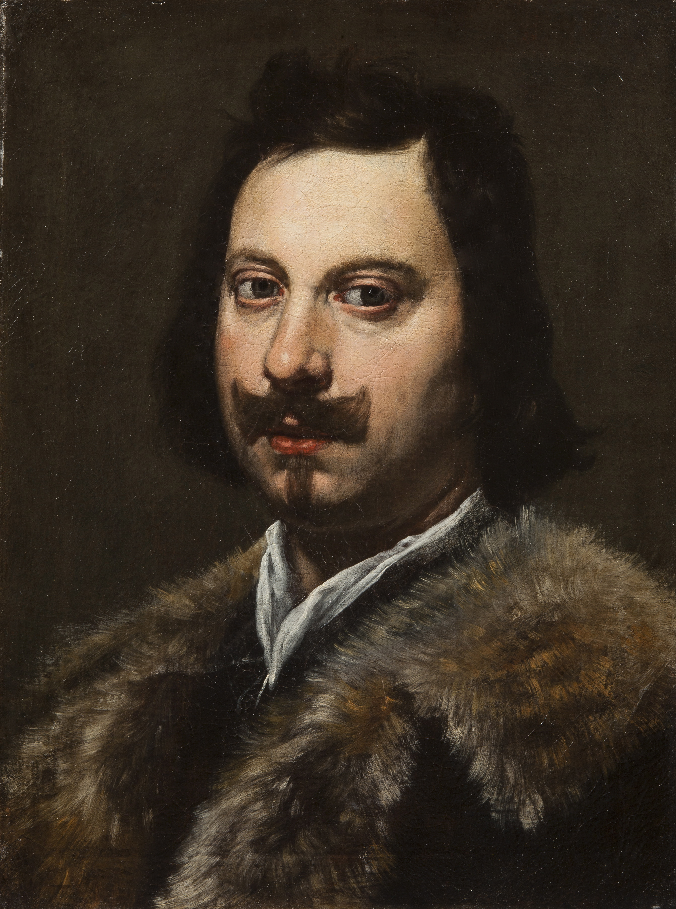
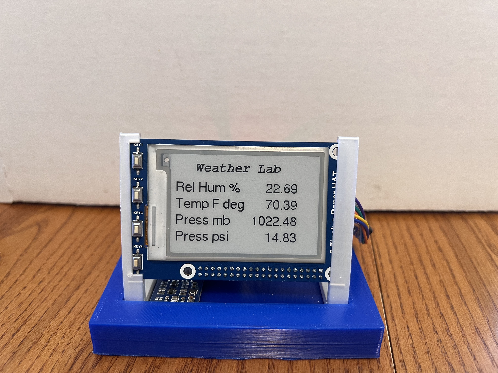

Measuring Atmospheric Pressure
From Torricelli's Mercury Tube to Modern Digital Sensors
Loading script…

Italian physicist and mathematician Evangelista Torricelli — a student and successor of Galileo — invented the first mercury barometer in 1643. His elegant experiment established that the atmosphere has weight and can support a column of liquid mercury approximately 760 mm (29.92 inches) tall at sea level.
His experiment was simple but revolutionary: he filled a glass tube (closed at one end) with mercury, then inverted it into an open dish of mercury. The column settled at ~760 mm — not because of a vacuum "pulling" it up, but because the weight of the atmosphere pushing down on the open dish was supporting the mercury column.
The empty space above the mercury — now called a Torricellian vacuum — was the first sustained man-made vacuum ever created.
💡 He famously wrote: "We live submerged at the bottom of an ocean of air." This insight laid the groundwork for Pascal's subsequent experiments on atmospheric pressure with altitude.
Aneroid Barometer — Uses a sealed, flexible metal capsule (aneroid cell) that expands and contracts with changes in atmospheric pressure. A mechanical linkage translates this movement into a pressure reading. Invented in 1844 by Lucien Vidie, the aneroid barometer replaced fragile mercury instruments for most practical applications.
Electronic / Digital Barometer — Modern sensors use a piezoelectric crystal or MEMS (Micro-Electro-Mechanical System) chip that changes its electrical resistance when pressure is applied. These are found in smartphones, aircraft altimeters, and weather stations.
Barograph — A recording barometer that traces atmospheric pressure continuously on a rotating drum of paper, creating a historical pressure record over time — essential for weather forecasting.
